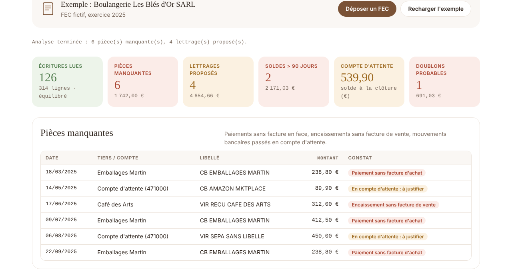

Révision expressOutil de révision pour cabinets comptables
Le FEC d'un dossier, révisé en dix secondes.
Le cabinet dépose le fichier des écritures comptables exporté de son logiciel. L'outil sort la liste de ce qui manque, ce qui peut être lettré et ce qui traîne, puis rédige le mail au client.

Ce qu'il fait
Lit le FEC de n'importe quel logiciel comptable et vérifie qu'il est équilibré.
Repère les paiements fournisseurs sans facture d'achat.
Repère les encaissements clients sans facture de vente.
Liste les mouvements en compte d'attente (471) à justifier.
Propose des lettrages : facture et règlement du même tiers, même montant, avec le délai de paiement.
Classe les soldes ouverts par ancienneté : normal, à surveiller (plus de 90 jours), à relancer (plus de 180 jours).
Détecte les doublons probables : même tiers, même montant, même pièce.
Résume tout en 6 chiffres clés, avec un clic vers le détail.
Rédige le mail au client avec la liste des justificatifs manquants, à copier en un clic.
Confidentiel
Le fichier est lu dans le navigateur : aucune donnée n'est envoyée sur internet. Fonctionne sur ordinateur et téléphone, sans installation.
Limites actuelles
Il propose les lettrages ; le comptable les valide dans son logiciel.
Paiements partiels ou groupés pas encore gérés.
Version de démonstration, testée sur un dossier fictif : à ajuster sur vos FEC.
Karoui · étudiant à l'UVSQDémo : la boulangerie de l'aperçu et ses écritures sont fictives.